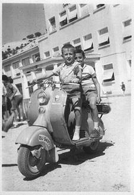
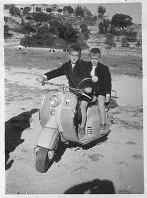

Fotografías
de
Carlos Bitaubé

1959 - Agosto
|

1959 - Noviembre |
¿sabe alguien quienes son los que me acompañan en cada foto? yo no.
El rastro de los años

1960
|
|
|
|
|

2003
|
1962 - De pié: Jesús Barrallo, Angel Guerra. Agachados: Carlos Bitaubé, Luis Barreiro y Francisco Javier Ealo.
|
"Comida especial del 8-XII-62".
En el sentido de las agujas del reloj: Cesar Rodrigo Guerra, Honorio Hernandez Martín, Mariano Muñoz Bouzo, José Ricardo Busta, Joaquín Barragán (Rodriguez?), Joaquin Lacaci Vazquez, Angel Arribas García, Carlos Bitaubé Marta
|
La misma mesa desde el otro lado
|
6º, 1966-1967
(detrás)Salvador González-Pola, Joaquín Lacaci, Cesar Rodrigo, Jorge Barco, Francisco Nebrera, (de pié) Enrique Peraita, (X)Javier MS Neyra, Victor Manuel Asenjo, Carlos Bitaubé, Tomás Pérez, Armando Forcén, Jesús Barrallo, (sentado) Juan José Asensio Molina.
|
Preu., 1967-1968
Tomás Joaquín Pagador, Carlos Bitaubé, Francisco Nebrera, Luis Barreiro, Jorge Barco, Jesús Barrallo, Javier Bengoechea, Alfonso Díez Montero, (delante) Cesar Rodrigo y Joaquín Lacaci, (faltan) Tomás Pérez, Armando Forcén y Enrique Peraita
|
volver